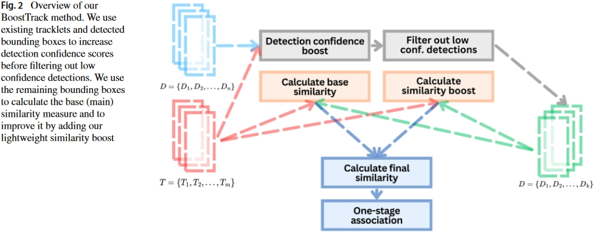
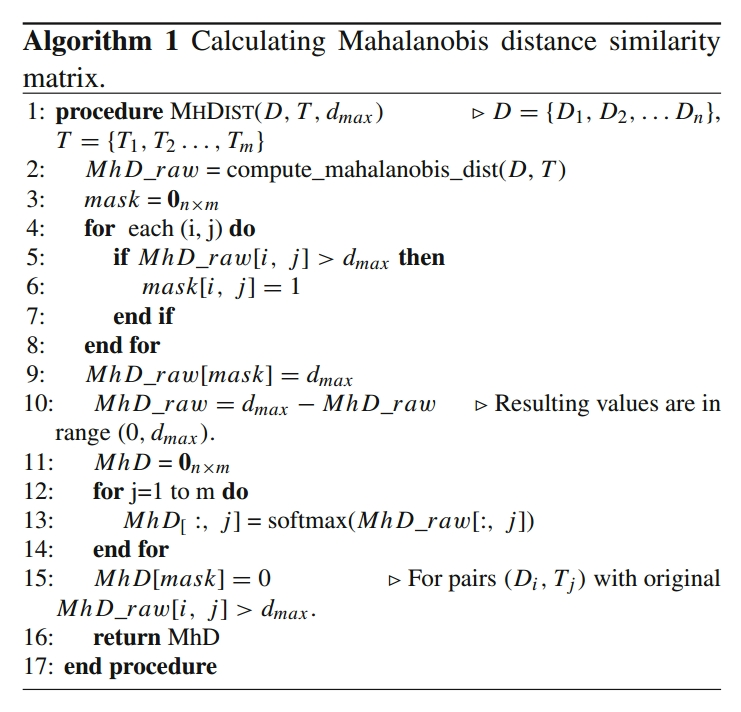
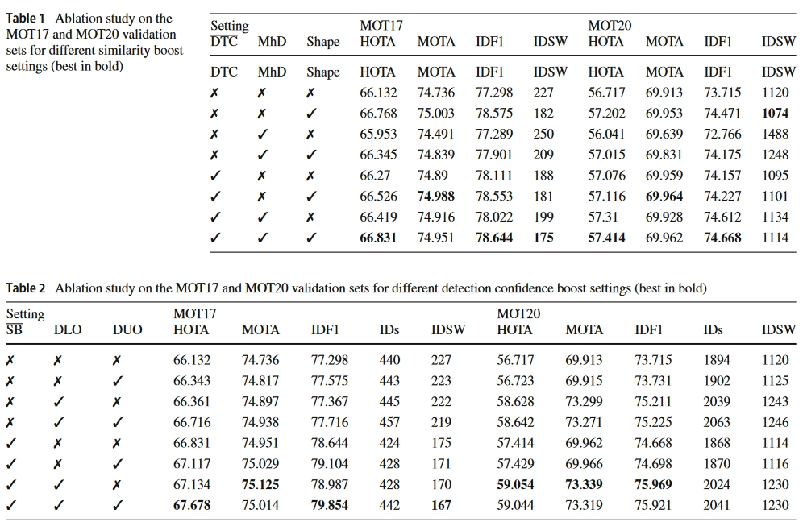
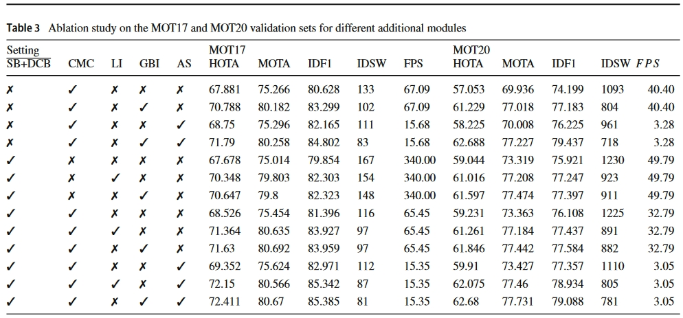

文章收录于ISCV2023
贴一个原文链接
代码链接
Abstract
理想情况下，MOT算法应该只使用真正阳性的检测，避免在实时工作中出现身份切换。为了接近所描述的理想状况，作者提出了BoostTrack，设计了几个轻量化即插即用的模块来提高MOT性能。
Introduction
现有的大多数检测方法，为了减少误报（false positive），通常将低置信度的检测过滤，使用置信度较高的检测进行关联。然而并不是所有的低置信度检测都应被过滤。ByteTrack采用两阶段匹配，第一阶段使用高置信度检测，第二阶段使用剩余的检测和不相关的轨迹。
但是使用两阶段甚至多阶段的检测，可能会导致身份转换（ID Switch）。在第一阶段，轨迹错误的与高置信度检测相关联，在第二阶段或者后续阶段也会强制低分检测进行错误的关联。但是如果在第一阶段就同时使用这两种检测，则可以正确匹配它们。
为了同时保证不使用两级关联并利用低置信度检测，作者提出要增强两类检测框：①我们预测一个物体应该存在的边界框；②目前跟踪的物体不应该存在的边界框。
听起来有点抽象，简单来说，就是：
1、增强预测物体存在的边界框：当物体被部分遮挡时，其检测到的边界框置信度可能较低，但预测位置与边界框之间的IoU可能较高。作者建议增加此类检测的检测置信度。
2、增强目前跟踪的物体不应存在的边界框：这听起来有些矛盾，但实际上是说，对于那些出现在不太可能有物体存在的位置上的低置信度检测结果，它们可能是误报（噪声），但也可能是新出现的物体，这些物体可能只有一部分进入了视野。为了识别这些特殊情况，作者采用了Mahalanobis距离度量来找出这些异常值。提高这些检测结果的置信度有助于改进系统的整体性能。
总的来说，为了利用多阶段匹配的优点并规避他的缺点，作者提出了三个模块：
1、利用检测-轨迹点置信度得分对IoU进行缩放，增加高置信度检测轨迹点对的相似度。高方差预测赋予高IoU (或其他任何相似性度量)且置信度相对较低的检测不应与低方差预测、高置信度检测有相同的权重重叠。
2、马氏距离可以作为一种相似性度量来解释估计的轨迹方差。可接受的值取决于轨道的维数和所选择的置信区间，任何变化都需要不同的缩放参数。作者介绍了一种更稳健的使用马氏距离作为相似性度量的方法。
3、为了降低拥挤场景中身份切换的可能性，引入了形状相似度，这是由于移动对象的IoU重叠度过高会导致不匹配的发生。尽管如此，物体(即宽度和高度)的形状应该在短时间内保持相对恒定。

Method
作者提出的相似矩阵增强技术与现有方法都可以进行叠加，以提高分配性能。
Detection-tracklet confidence similarity boost
为了避免多级匹配且在一级匹配中利用低分检测信息，作者设计该环节来提高低分检测的置信度，将其提高到阈值之上，与高分检测同时进行匹配。
1
2
3
4
5
6
7
8
9
10
| if detection_confidence is not None and track_confidence is not None:
conf = np.multiply(detection_confidence.reshape((-1, 1)), track_confidence.reshape((1, -1)))
conf[iou_matrix < iou_threshold] = 0
cost_matrix += lambda_iou * conf * iou_matrix
else:
warnings.warn("Detections or tracklet confidence is None and detection-tracklet confidence cannot be computed!")
conf = None
|
增强后的代价函数为：
Mahalanobis distance similarity boost
这一部分基于检测与跟踪器之间的马氏距离，增强可能被误认为是噪声的检测框。
伪代码如下：

增强后的代价函数为：
代码片段：
1
2
3
4
5
6
7
8
9
10
| if mahalanobis_distance is not None and mahalanobis_distance.size > 0:
limit = 13.2767
mask = mahalanobis_distance > limit
mahalanobis_distance[mask] = limit
mahalanobis_distance = limit - mahalanobis_distance
mahalanobis_distance = np.exp(mahalanobis_distance) / np.exp(mahalanobis_distance).sum(0).reshape((1, -1))
mahalanobis_distance = np.where(mask, 0, mahalanobis_distance)
cost_matrix += lambda_mhd * mahalanobis_distance
|
Shape similarity boost
在物体高度重叠的情况下，IoU可能会出现歧义，但物体的长宽比在一定时间内保持恒定，可以减少歧义的产生。
但是不应过度依赖于最近未更新的轨迹的形状，因为未更新的时间内目标的高度和宽度都可能发生了变化。
1
2
3
4
5
6
7
8
9
10
11
12
13
14
|
def shape_similarity(detects: np.ndarray, tracks: np.ndarray) -> np.ndarray:
if detects.size == 0 or tracks.size == 0:
return np.zeros((0, 0))
dw = (detects[:, 2] - detects[:, 0]).reshape((-1, 1))
dh = (detects[:, 3] - detects[:, 1]).reshape((-1, 1))
tw = (tracks[:, 2] - tracks[:, 0]).reshape((1, -1))
th = (tracks[:, 3] - tracks[:, 1]).reshape((1, -1))
return np.exp(-(np.abs(dw - tw)/np.maximum(dw, tw) + np.abs(dh - th)/np.maximum(dw, tw)))
if conf is not None:
cost_matrix += lambda_shape * conf * shape_similarity(detections, trackers)
|
最后的代价矩阵为：
Detection confidence boosting techniques
1
2
3
4
5
6
7
8
9
10
11
12
13
14
15
16
17
18
19
20
21
22
23
24
25
26
27
28
29
30
31
32
33
34
35
36
37
38
39
40
41
42
43
44
45
46
47
48
49
50
51
52
53
54
55
|
def do_iou_confidence_boost(self, detections: np.ndarray) -> np.ndarray:
iou_matrix = self.get_iou_matrix(detections)
ids = np.zeros(len(detections), dtype=np.bool_)
if iou_matrix.size > 0 and self.frame_count > 1:
max_iou = iou_matrix.max(1)
coef = self.dlo_boost_coef
ids[(detections[:, 4] < self.det_thresh) & (max_iou * coef >= self.det_thresh)] = True
detections[:, 4] = np.maximum(detections[:, 4], max_iou * coef)
return detections
def do_mh_dist_confidence_boost(self, detections: np.ndarray) -> np.ndarray:
n_dims = 4
limit = 13.2767
mahalanobis_distance = self.get_mh_dist_matrix(detections, n_dims)
if mahalanobis_distance.size > 0 and self.frame_count > 1:
min_mh_dists = mahalanobis_distance.min(1)
mask = (min_mh_dists > limit) & (detections[:, 4] < self.det_thresh)
boost_detections = detections[mask]
boost_detections_args = np.argwhere(mask).reshape((-1,))
iou_limit = 0.3
if len(boost_detections) > 0:
bdiou = iou_batch(boost_detections, boost_detections) - np.eye(len(boost_detections))
bdiou_max = bdiou.max(axis=1)
remaining_boxes = boost_detections_args[bdiou_max <= iou_limit]
args = np.argwhere(bdiou_max > iou_limit).reshape((-1,))
for i in range(len(args)):
boxi = args[i]
tmp = np.argwhere(bdiou[boxi] > iou_limit).reshape((-1,))
args_tmp = np.append(np.intersect1d(boost_detections_args[args], boost_detections_args[tmp]), boost_detections_args[boxi])
conf_max = np.max(detections[args_tmp, 4])
if detections[boost_detections_args[boxi], 4] == conf_max:
remaining_boxes = np.array(remaining_boxes.tolist() + [boost_detections_args[boxi]])
mask = np.zeros_like(detections[:, 4], dtype=np.bool_)
mask[remaining_boxes] = True
detections[:, 4] = np.where(mask, self.det_thresh + 1e-4, detections[:, 4])
return detections
|
Experiment

